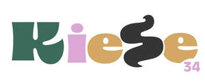
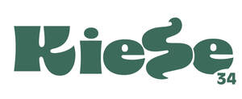

Trade Mark Journal No.2025/026 27 June 2025
UK00004219523 16 June 2025 (3,5,18,21,42,44)
Mark 1

Mark 2

- Class 3
- Creams (Cosmetic -); Cosmetic creams; Cosmetics and cosmetic preparations; Sunscreens [for cosmetic use]; Cosmetic moisturisers; Cosmetic soaps; Sunscreen [for cosmetic use]; Cosmetic facial lotions; Facial lotions [cosmetic]; Cosmetic soap; Lotions for cosmetic purposes; Cosmetic masks; Tonics [cosmetic]; Cosmetic dyes; Facial creams [for cosmetic use]; Facial creams [cosmetic]; Cosmetic powder; Anti-aging creams [for cosmetic use]; Cosmetic preparations; Facial cleansers [cosmetic]; Cosmetic pencils; Pencils (Cosmetic -); Anti-ageing creams [for cosmetic use]; Cosmetic kits; Kits (Cosmetic -); Facial moisturisers [cosmetic]; Anti-wrinkle creams [for cosmetic use]; Cosmetic skin fresheners; Lacquer for cosmetic purposes; Pro-collagen for cosmetic purposes; Cosmetic creams for the skin; Skin creams [cosmetic]; Skin creams [for cosmetic use]; Facial cream [for cosmetic use]; Skin balms [cosmetic]; Serums for cosmetic purposes; Skin cleansers [cosmetic]; Cosmetic skin enhancers; Cosmetic tanning preparations; Collagen for cosmetic purposes; Cosmetic rouges; Cosmetic hair lotions; Cleansing creams [cosmetic]; Facial scrubs [cosmetic]; Self-tanning preparations [cosmetic]; Facial toners [cosmetic]; Lip coatings [cosmetic]; Pomades for cosmetic purposes; Suncare lotions [for cosmetic use]; Skin cream [for cosmetic use]; After-sun lotions [for cosmetic use]; Skin whitening preparations [cosmetic]; Anti-ageing serums for cosmetic purposes; Anti-wrinkle cream [for cosmetic use]; Toning creams [cosmetic]; Cosmetic creams and lotions; Adhesives for cosmetic purposes; Cosmetic sun-protecting preparations; Cosmetic facial masks; Facial masks [cosmetic]; Astringents for cosmetic purposes; Acne cleansers, cosmetic; Glitter for cosmetic purposes; Sunscreen creams [for cosmetic use]; Facial washes [cosmetic]; Lip stains for cosmetic purposes; Cosmetic sunscreen preparations; Toners for cosmetic purposes; Cosmetic facial packs; Facial packs [cosmetic]; Geraniol for cosmetic purposes; Skin care lotions [cosmetic]; Cosmetic massage creams; Cosmetic nail preparations; Retinol cream for cosmetic purposes; Cosmetic suntan lotions; Eyelashes (Cosmetic preparations for -); Cosmetic preparations for eyelashes; Cosmetic suntan preparations; Skin toners [cosmetic]; Cosmetic hand creams; Skin hydrators for cosmetic purposes; Cosmetic products for the shower; Procollagen for cosmetic purposes; Skin care creams [cosmetic]; Cosmetic creams for skin care; Pencils for cosmetic purposes; Cosmetic eye gels; Gels for cosmetic purposes; Hair care creams [for cosmetic use]; Hair care lotions [for cosmetic use]; Exfoliating scrubs for cosmetic purposes; Cosmetic sun-tanning preparations; Hair tonics [for cosmetic use]; Tooth powders [for cosmetic use]; Cosmetic preparations for slimming purposes; Slimming purposes (Cosmetic preparations for -); Self tanning creams [cosmetic]; Cosmetic nourishing creams; Skin care (Cosmetic preparations for -); Cosmetic preparations for skin care; Skin conditioning creams for cosmetic purposes; Ointments for cosmetic use; Moisturising gels [cosmetic]; Moisturising skin lotions [cosmetic]; Suntan oils for cosmetic purposes; Self tanning lotions [cosmetic]; Softening cleanser [cosmetic]; Moisturising concentrates [cosmetic]; Cotton for cosmetic purposes; Cosmetic face powders; Face powders [for cosmetic use]; Essences for cosmetic purposes; Cosmetics; Lint for cosmetic purposes; Cosmetic eye pencils; Sun creams [for cosmetic use]; Skincare cosmetics; Skin care creams, other than for medical use; Anti-aging skincare preparations; Skin care cosmetics; Anti-aging moisturizers used as cosmetics; Balms other than for medical purposes; Balms, other than for medical purposes; Beauty care cosmetics; Cosmetic products in the form of aerosols for skincare; Skincare preparations; Skin care oils [cosmetic].
- Class 5
- Therapeutic creams [medical]; Skin care creams for medical use; Serums for medical purposes; Dermatological pharmaceutical products; Pharmaceutical preparations for animal skincare; Skin care preparations for medical use; Clinical medical reagents; Pharmaceutical preparation for skin care; Medicinal creams for skin care.
- Class 18
- Cosmetic bags; Cosmetic purses.
- Class 21
- Cosmetic brushes; Cosmetic sponges; Cosmetic utensils; Cosmetic spatulas; Cosmetic apparatus for microdermabrasion; Cosmetic powder compacts.
- Class 42
- Cosmetic research; Medical laboratory services; Medical research; Medical research services.
- Class 44
- Cosmetic treatment; Cosmetic make-up services; Cosmetic treatment for the hair; Cosmetic treatment for the body; Cosmetic treatment for the face; Cosmetic laser treatment of skin; Medical care; Medical services for treatment of the skin; Medical spa services; Medical services for the treatment of skin cancer; Medical and healthcare clinics; Medical and healthcare services; Medical care services; Health care consultancy services [medical]; Medical services; Medical clinic services; Clinic (Medical -) services; Clinic services (Medical -).
kiese Ltd